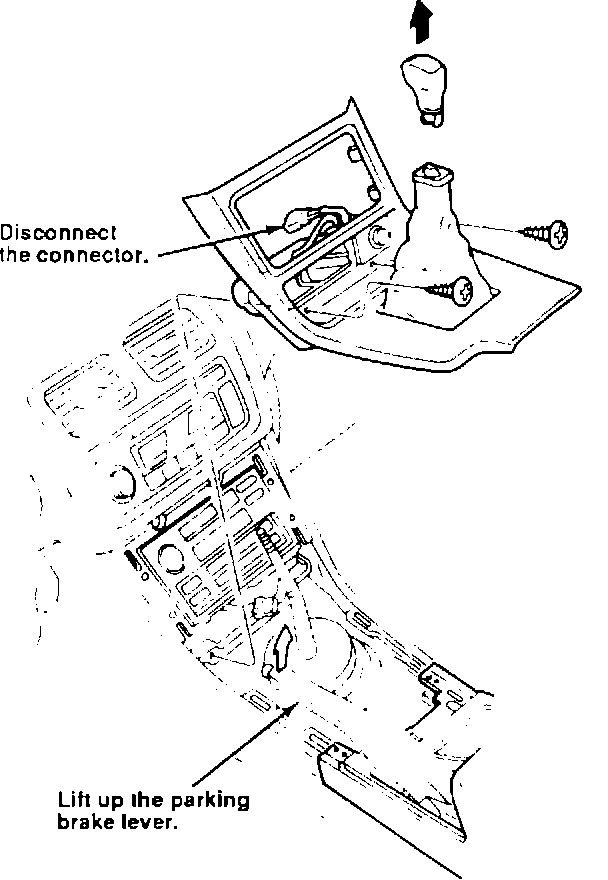
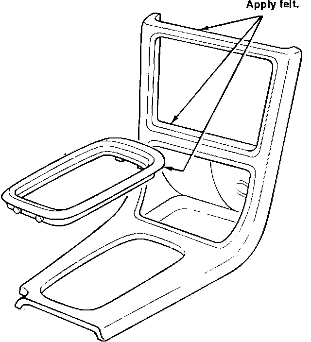

Center Console Cover Creaks
CENTER CONSOLESymptom:
Creak from the center console cover.
Probable Cause:
The center console cover contacts the radio, the dash and the shift indicator garnish.
Corrective Action:
Add or re-position the felt insulation.

1. Remove the center console cover. See section 20 of the service manual.
NOTE:
Remove the two screws in the coin pocket.
2. Inspect for points of contact:
^ Console cover/dash surface
^ Radio/console cover surface
^ Underside of the shift indicator garnish

3. Correct insulation by re-positioning or adding felt where needed.
4. Reinstall the console cover. If the coin pocket screw holes are broken, replace the coin pocket. See PARTS INFORMATION.
PARTS INFORMATION:
Coin Pocket: 77297-SP0-A00
WARRANTY INFORMATION
Operation number: 841290
Flat rate time: 0.3 hours
Failed P/N: 77296-SP0-A10ZB
Defect code: 042
Contention code: B07